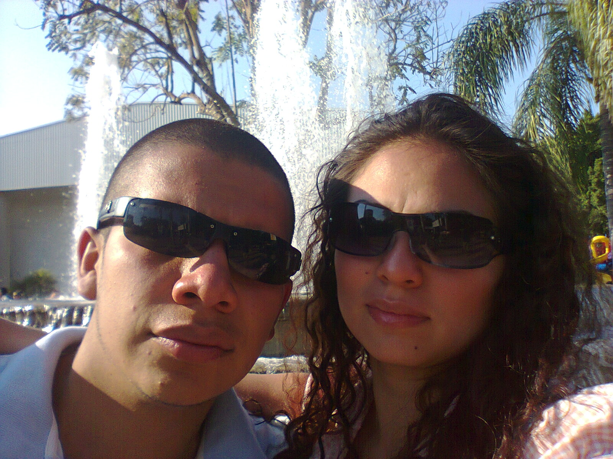

Historia de san valentin
El 14 de febrero fue señalado como día de fiesta hacia 1969, cuando el calendario Católico Romano dedicó esa fecha para recordar a dos santos cristianos, uno de ellos San Valentín, martirizado por el emperador romano Claudio II. La historia dice que San Valentín fue sacrificado porque se dedicó a casar parejas aun cuando el emperador lo había prohibido. Al parecer, el dirigente romano tenía la creencia de que los soldados casados no eran tan buenos y eficientes como los solteros. Además, en la antigua Roma, el 15 de febrero se celebraba el día de la fertilidad o lupercalia, en honor del dios Lupercus. A través de los siglos se han conjugado toda una serie de leyendas y tradiciones y hoy el 14 de febrero, Día de San Valentín es una fecha dedicada a los amigos y a los enamorados; una fecha en que se intercambian mensajes y obsequios para demostrar amor y amistad a los seres más cercanos. Aunque ésta como otras fechas se han comercializado y parecen invitarnos al consumismo, los cristianos podemos aprovechar para reflexionar sobre lo que significan estos dos valores, tan importantes en las relaciones humanas: el amor y la amistad..
Amor
¿Qué es el amor?
El amor es la forma más plena de comunicación y de relación humana. Es fundamental para todas las personas. Todos necesitamos recibir y dar amor. Pero esta palabra está tan manipulada y es tan compleja que es necesario aclararla, para entender bien qué es amor. San Juan nos dice: Dios es Amor, pero, ¿a qué tipo de amor se refiere?, ¿hablará de lo mismo que muchos entienden por "amor"? Se puede decir que hay tres clases de amor:
La Amistad
La amistad, comienza por la simpatía y el agrado que se siente al encontrarse personas que tienen cosas en común con nosotros. Te empiezan a interesar las cosas del amigo y tu encuentras con gusto que a él también le interesan tus cosas. Es muy agradable saber que cuentas con alguien que te quiere y te comprende y que comparte muchos de tus gustos y de tus ideas.
MiVida
